Dia 1: BH - Ouro Preto
Embarquei solo no ônibus partindo 20h30 de Campinas com destino em Belo Horizonte. Cheguei no destino por volta das 7h da manhã do dia 29-abr onde montei a bicicleta e comecei a pedalar.
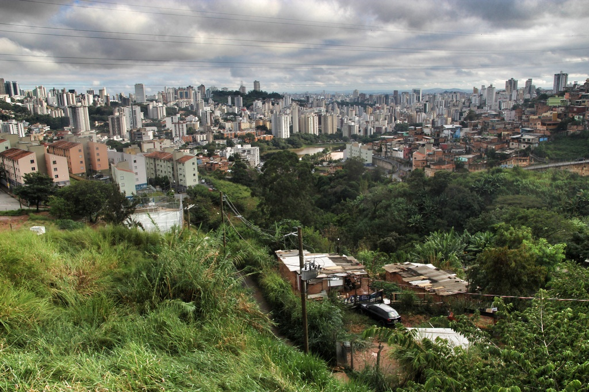 Vista de Belo Horizonte/span>
Segui sentido sul pela avenida Bias Fortes e depois pela BR-356 até o trevo para Ouro Preto. Neste momento encontrei com um grupo de ciclistas de BH (Celio e mais 2 pessas) e pedalamos até o Alphaville na represa dos Ingleses. Passei por Itabirito e entrei em Ouro Preto mas acabei dormindo num bairro antes da cidade.
Distância: 82km Hora: 08:00 - 16:00
Dia 2: Ouro Preto
Pedalei os 20 quilômetros restantes até o centro de Ouro Preto e me hospedei no hostel Uai. Inicialmente vazio mas final do dia havia 8 pessoas. A cidade estava cheia por conta do feriado e deu trabalho para arranjar um lugar para almocar.
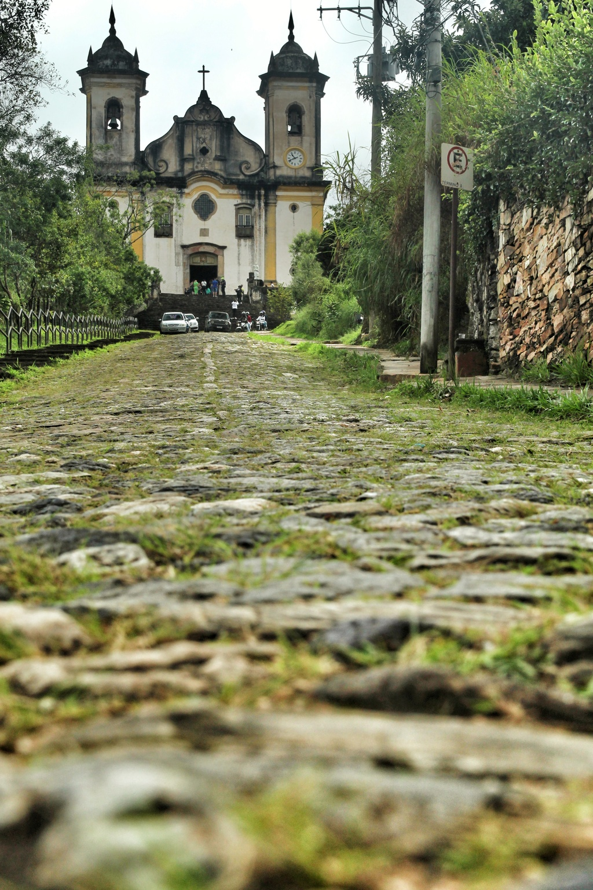 Igreja São Francisco de Paula
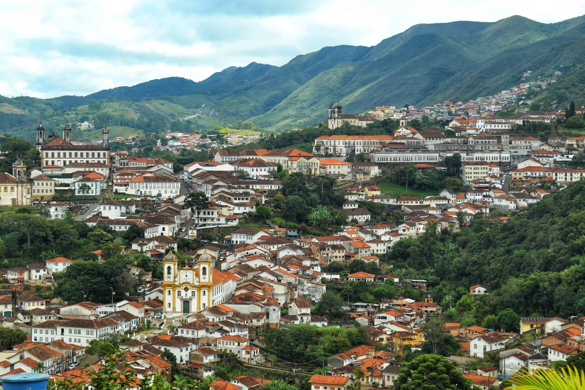 Vista de Ouro Preto
Distância: 21km Hora: 07:00 - 11:00
Dia 3: Ouro Preto - Ponte Nova
Deixei Ouro Preto para Mariana por uma descida longa. A cidade estava mais vazia, parece que os turistas vão para Ouro Preto mesmo. Continuei por uma antiga linha de trem passando por alguns bairros até chagar no Furquim. Fui pelo asfalto prevendo que não diria tempo para chegar em Ponte Novo durante o dia. Passei por Acaiaca e depois de muitos morros cheguei anoitecendo em Ponte Nova.
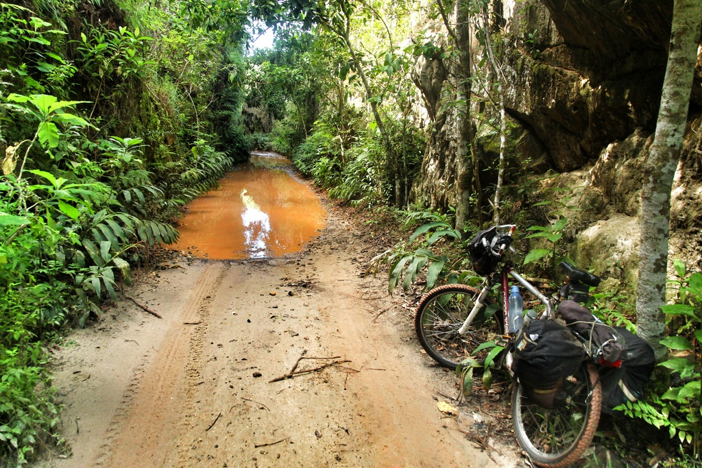 Caminho na antiga via ferrea
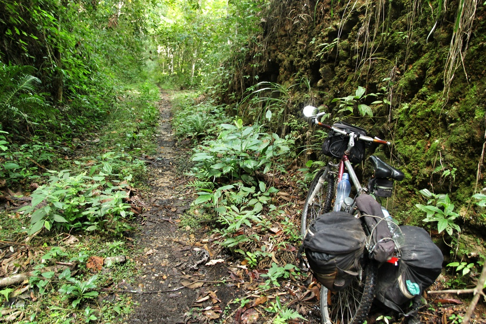 Caminho na antiga via ferrea
Distância: 90km Hora: 07:30 - 18:00
Dia 4: Ponte Nova - Jequeri
Fui em uma subida longa até o presídio de Ponte Nova. Depois a estrada foi tomada pelo mato indicando que não passa ninguém ali usualmente. Cheguei na cidade de Oratório onde almocei. Continuei até a cidade de Jequeri as 14h30 e resolvi ficar por conta de uma dor na costas.
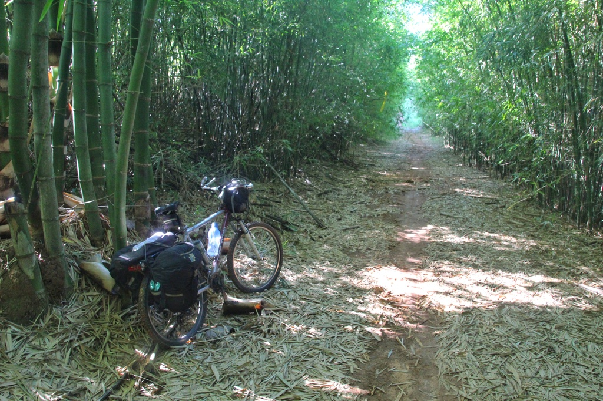 Vista de Belo Horizonte/span>
Distância: 34km Hora: 07:30 - 14:30
Dia 5: Jequeri - Santa Margarida
Saí 7h30 da pousada. Depois de uma subida e uns 15km cheguei no bairro da Grota. Mais uns 15km chego no bairro da Cachoeira Torta. O caminho estava com muitos morros quando cheguei no bairro Padre Fialho e depois em Santa Margarida.
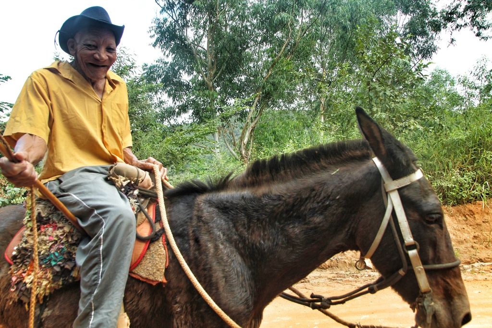 Caminho na antiga via ferrea
Distância: 34km Hora: 07:30 - 14:30
Dia 6: Santa Margarida - Alto Caparao
Como queria subir o pico da Bandeira, resolvi alterar um pouco o caminho. Passei por São João do Manhuaçu e ao invés de ir para Manhumirim foi para Alto Jequitiba e Alto Caparao.
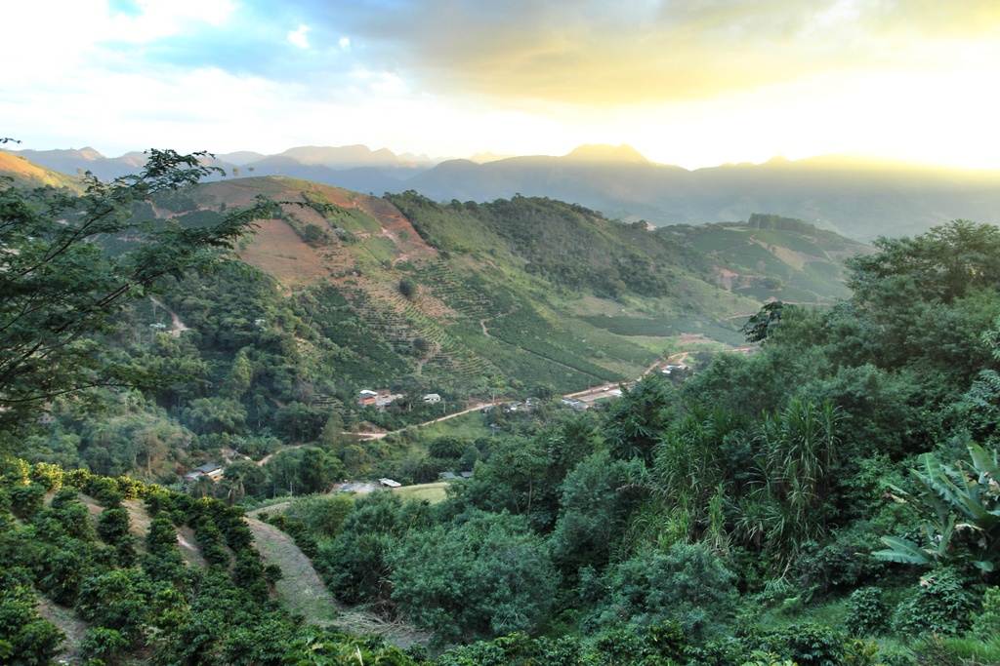 Fazenda de café
Este foi um dos trechos mais difíceis que começou na ida para São João do Manhuaçu que foi uma subida de 730m até 1100m em meio a um cafezal imenso seguido por uma descida bem técnica. Comprei provisões na cidade e segui por outra longa subida entre o bairro dos Pontões e Alto Jequitibá. Cheguei quase 16h e reservei o hostel de Alto Caparao para continuar.
Foi outra subida saindo de 650m a 1070m agora em asfalto para chegar em Alto Caparaó onde já tinha a hospedagem acertada. Cheguei por volta das 18h bastante cansado.
Distância: 63km Hora: 07:00 - 18:00
Dia 7: Alto Caparao - Pico da Bandeira
Contratei o transporte até a Tronqueira no parque chegando por volta das 7h. Como é um parque gerenciado pelo ICMBIO preciso me registrar na portaria sem taxas. O caminho fica alternando entre uma subida forte e quase plano pelos 7km de trilha até o topo. No terreirão haviam 2 barracas e algumas pessoas. Um pouco depois consegui água em uma bica e já conseguia ver o topo. O trecho final era mais íngreme e tive que ir mais lentamente: minhas pernas estavam cansadas. Cheguei no cume 11h30 com vista parcialmente encoberta. Fiquei 1h onde fica uma grande cruz e resolvi voltar.
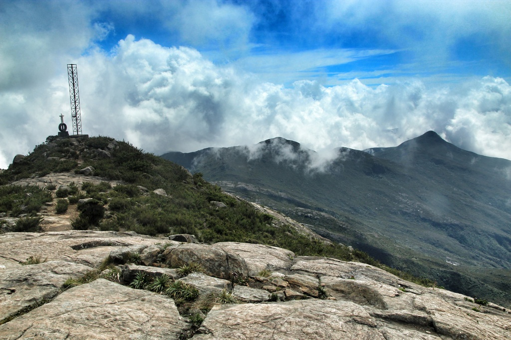 Pico da Bandeira - 2890m
O caminho de volta cansa mais as pernas, o fôlego é bem mais tranquilo. Fiquei um pouco no terreirão convensando com o Sr. Antonio que é da região mas mora no sul da Bahia. Já na tronqueira encontrei um grupo de umas 15 pessoas de Juiz de Fora que fizeram o caminho da Luz a pé desde Tombos. Depois das 16h meu transporte chegou e me levou de volta para o hostel.
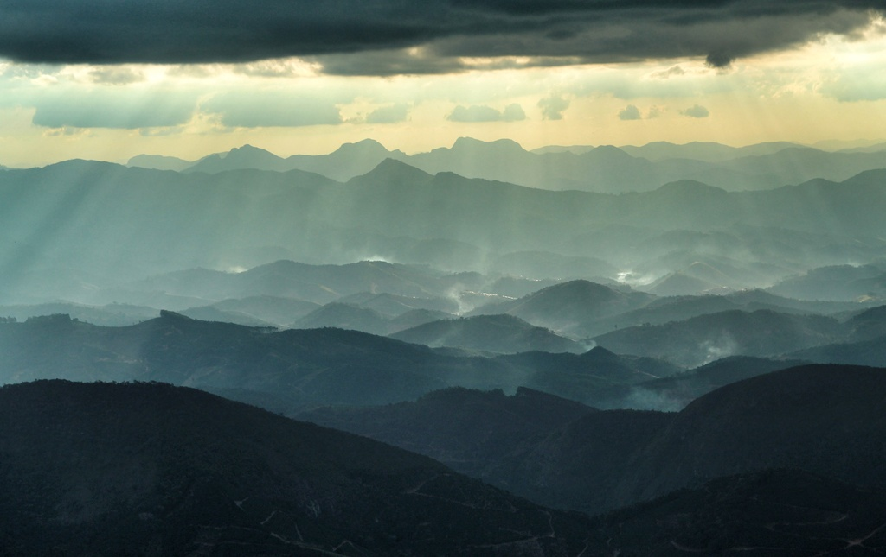 Vista do Pico
Distância: 0km Hora: 07:30 - 16:00
Dia 8: Alto Caparao - Iuna
Deixei a pousada 7h e rumei para o Norte para encontrar o caminho original. Foi um subida de uns 3km seguido por uma descida longa até o bairro de São João Principe.
Deixei a pousada 7h e rumei para o Norte para encontrar o caminho original. Foi um subida de uns 3km seguido por uma descida longa até a BR-262 perto de Pequiá. Já no asfalto uma subida de um 6km e o restante mais ou menos plano até Irupi.
Irupi a Iuna foi em asfalto bem tranquilo e me hospedei no hotel São Judas Tadeu.
Distância: 63km Hora: 07:00 - 16:00
Dia 9: Iuná - Conceição do Castelo
Este foi outro dia difícil. Uns 5km depois de Iuna começa uma longa subida seguida por uma descida técnica até o bairro de Tombos e depois Piaçu. Outra subida em uma estrada de terra pouco mantida e cheia de pedras para se chegar em Conceição do Castelo. Cheguei por volta das 17h beem cansado para continuar.
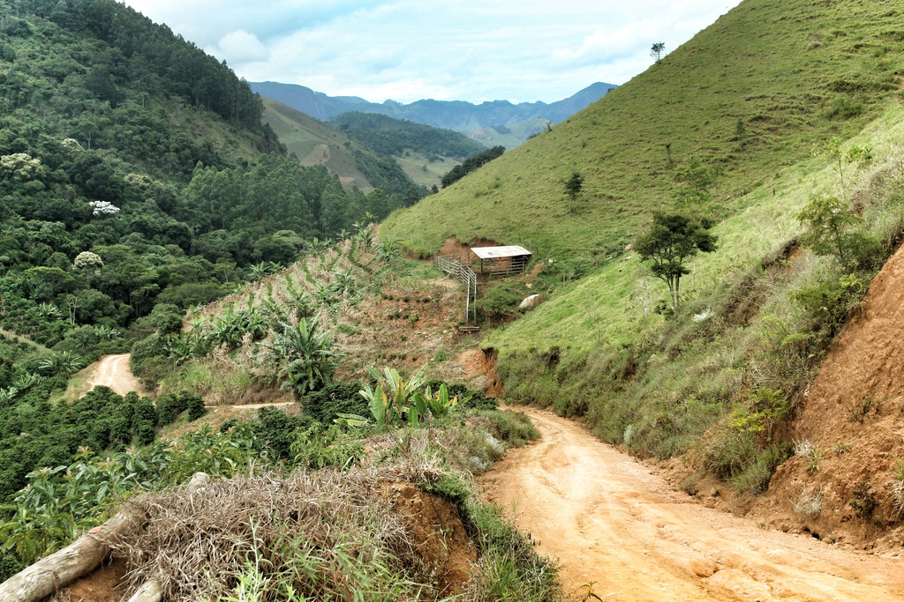 Estrada de terra
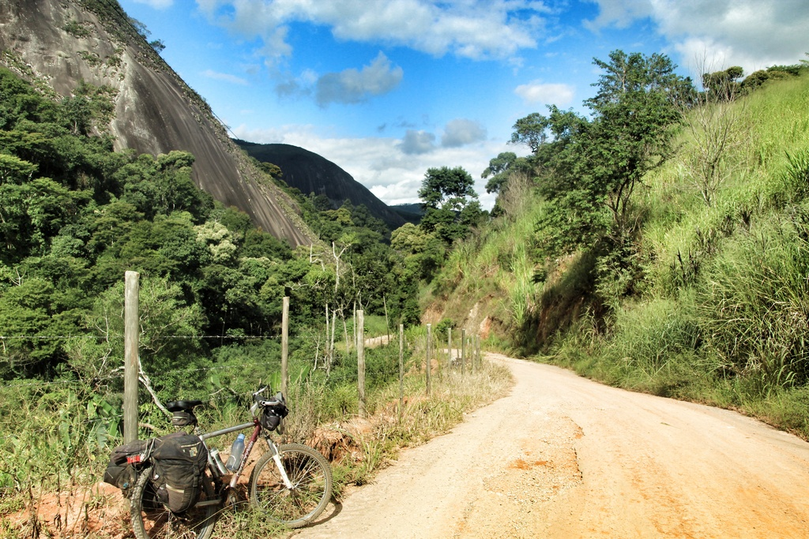 Estrada de terra
Distância: 78km Hora: 07:00 - 16:00
Dia 10: Conceição do Castelo - Domigos Martins
Foram 17km até a cidade de Venda Nova do Imigrante. Como estava meio cansado do dia anterior resolvi mudar o caminho e ir pela BR-262. Foi um trecho mais longo sem cidades do caminho mas que rendia mais. Passei em Mal Floriano e finalmente Domingos Martins, conhecida por ser colonizada por alemães.
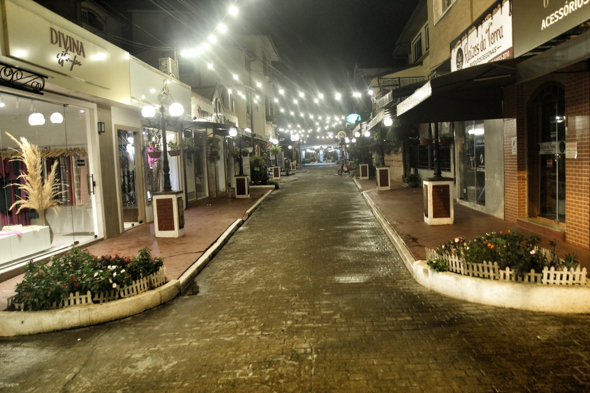 Domingos Martins
Distância: 70km Hora: 07:00 16:00
Dia 11: Domingos Martins - Vitoria
Ainda na cidade tomei uma estradinha de terra com muitas subida e descidas. Mesmo seguindo o rio Jacu, tinha que atravessar um morro quando deixava por um momento o leito do rio. Em certo momento meu celular não queria ligar e nem sempre havia marcos da estrada para seguir. Foi então que resolvi ir para o asfalto assim que cheguei em uma venda.
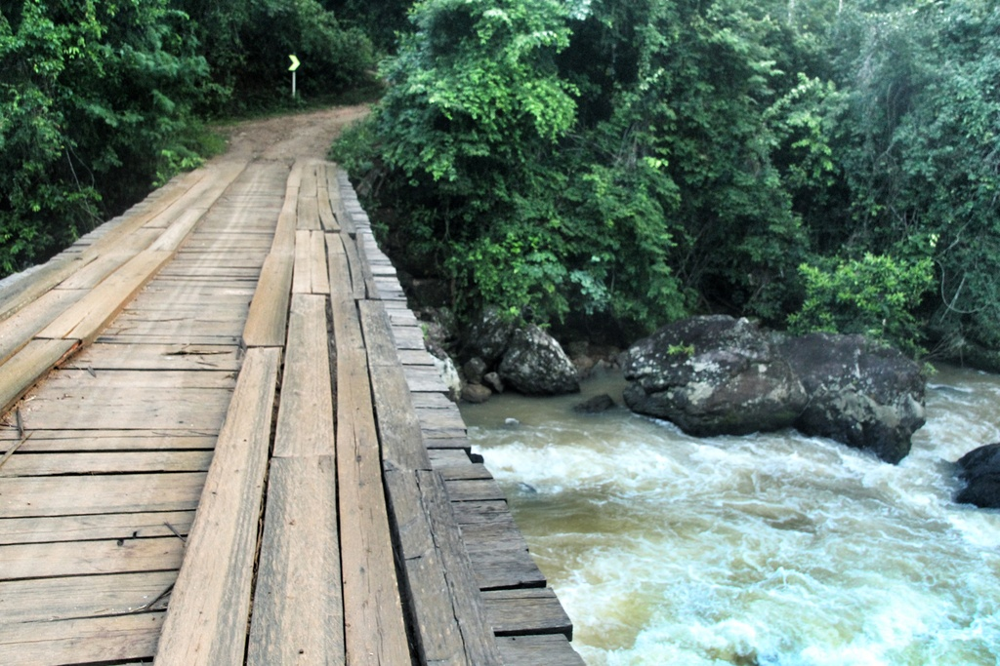 Domingos Martins
Passei por Viana e um pouco por Vila Velha para atravessar a ponte para Vitória.
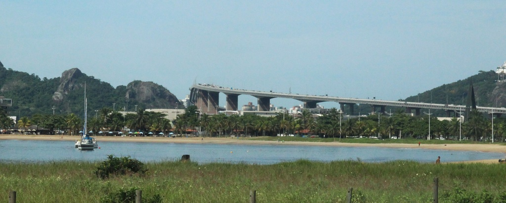 Vitória
Distância: 60km Hora: 07:00 - 12:00